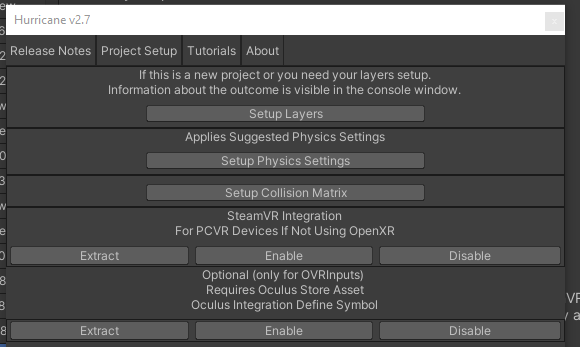

Project Setup
HurricaneVR requires a few project settings to get up and running.
Open the Setup window by navigating to Tools → HurricaneVR → Setup and then click the “Project Setup" button on the toolbar.
- Setup Layers will add layers if necessary and will report the status of the operation in your console.
- Setup Physics settings will set the recommended physics settings for joint and collision stability.
- Setup Collision Matrix will setup the collision layer matrix for you.

Tags and Layers
Layer Notes
By default grabbable objects require line of sight from the hand to be picked up.
The RaycastLayermask field defines what layers will block the line of sight ray cast. This field will need to be updated whenever you add additional layers for your environment or grabbable objects other than "Grabbable" framework layer.
Note
Grabbable objects can have their line of sight requirement disabled on their HVRGrabbable component.
Framework Layers
- Player - used to prevent collision with the player character controller.
- Assign to the PlayerController object (be careful not to assign to the children)
- Grabbable - used to help prevent collision with the player character controller and is automatically assigned recursively to objects with HVRGrabbable components.
- Automatic layer assignment can be disabled per grabbable with by setting AutoApplyLayer to false.
- Automatic layer assignment can be toggled at the project level on the HVRSettings scriptable object.
- Hand - used on the hand collision geometry
- Automatically applied to the HVRHandGrabber component and children unless disabled on the same.
- DynamicPose - Used for the dynamic posing grab sequence to ensure the fingers only collide with the desired object.
- Automatically set in code during the auto pose sequence, no need to assign these to any objects.

Fixed Time Step
For smooth game play in VR, the Fixed Time Step must match the refresh rate of the headset.
The HVRTimeManager component can be added to your scene, and will automatically handle the fixed time step for you.
The HVRGlobal prefab which comes with other required components already has this and is in use in the included demo scenes.
Physics Settings
Edit -> Project Settings -> Physics
Notable Properties:
- Default Solver Iterations & Default Solver Velocity Iterations
- Increasing these can stabilize contact and joint constraints at the cost of CPU budget.
- Default Max Angular Speed
- Layer Collision Matrix
- Solver Type = PGS